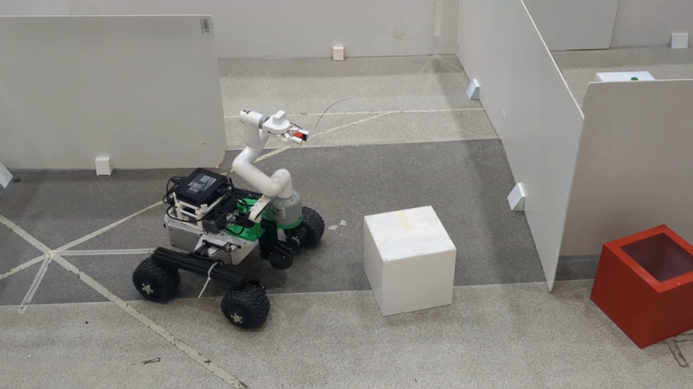
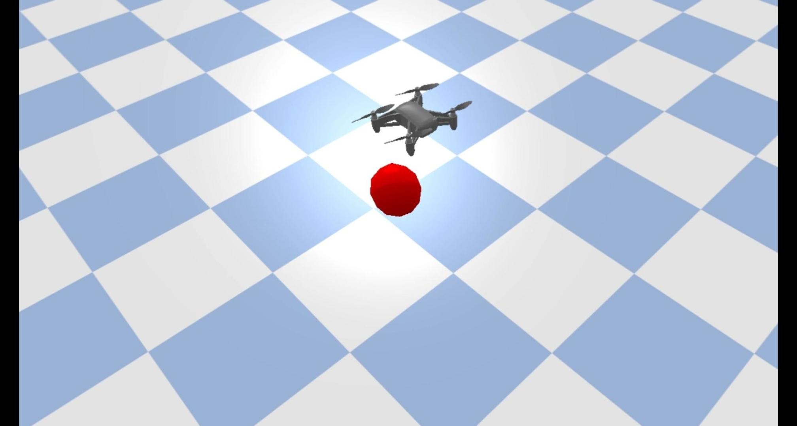
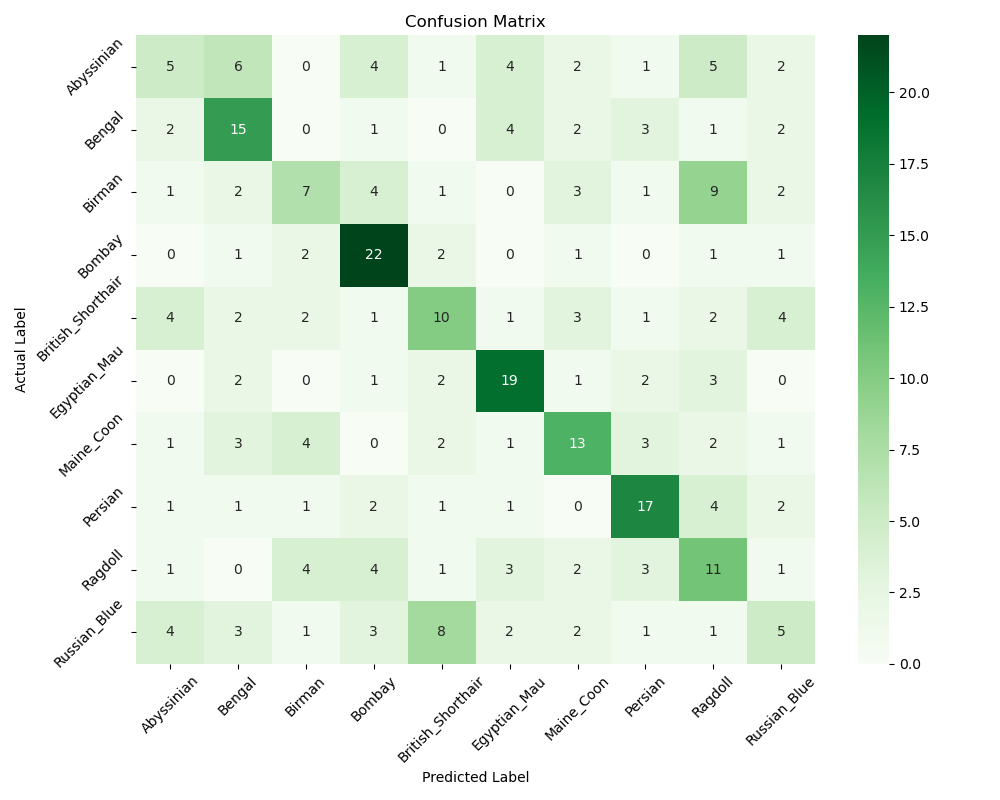
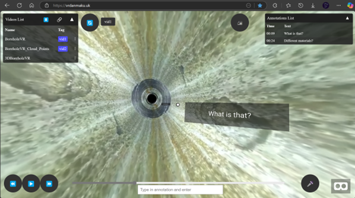
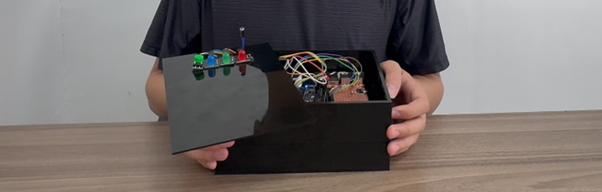

Featured Projects

Search and Retrieval Rover
An autonomous mobile robot system integrating a Leo Rover to navigate through random environments, detect coloured objects, and pick-and-place them into corresponding target bins.
My role focused on the control and system integration of the robotic arm. I implemented the pick-and-place state machine workflow, and managed TF2 coordinate transformations between the vision system and the manipulator.

UAS Feedback Controller & Disturbance Observer
A robust feedback control system developed for the DJI Tello drone (simulated and real-world) to achieve highly precise waypoint tracking and orientation control.
Implemented a custom Disturbance Observer (DOB) combined with an adaptive PID controller to dynamically compensate for environmental disturbances (e.g., wind). Includes interactive 2D and 3D visualization tools for flight trajectory analysis.

A-Star Pathfinding Algorithm Implementation
A grid-based A* path planning algorithm implementation for autonomous mobile robots to find optimal collision-free routes.
Implemented the core A* algorithm in pure Python using a 4-connected motion model and Euclidean heuristic, integrating it with a GUI for visualization.

Image Classification: Deep Learning vs. Traditional Computer Vision
A comparative study of Deep Learning (PyTorch ResNet18) and traditional Computer Vision (BoW with SIFT/SVM) for image classification.
Evaluated the trade-offs between model accuracy, computational efficiency, and interpretability.

Web-based VR Borehole Visualization & Collaborative Platform
An immersive Web VR platform for multi-user collaboration and borehole data visualization.
Built by A-Frame, WebSockets, and AWS, featuring time-synced annotations and dual-video comparison.

Multi-user Voice Authentication Access Control System
A low-power voice authentication access control system for smart homes using Sony Spresense and Raspberry Pi.
My role involved implementing real-time audio processing (MFCC & GMM), optimized hardware tasks, and designed interactive LED feedback.
Academic Experience & Explorations
Robotics for UN SDGs
An academic presentation exploring the role and applications of robotics technology in achieving the United Nations Sustainable Development Goals (SDGs).
2D LiDAR Obstacle Detection Analysis
An experimental study analyzing the capabilities and limitations of a single 360-degree 2D RPLiDAR in detecting various spatial obstacles in realistic environments.